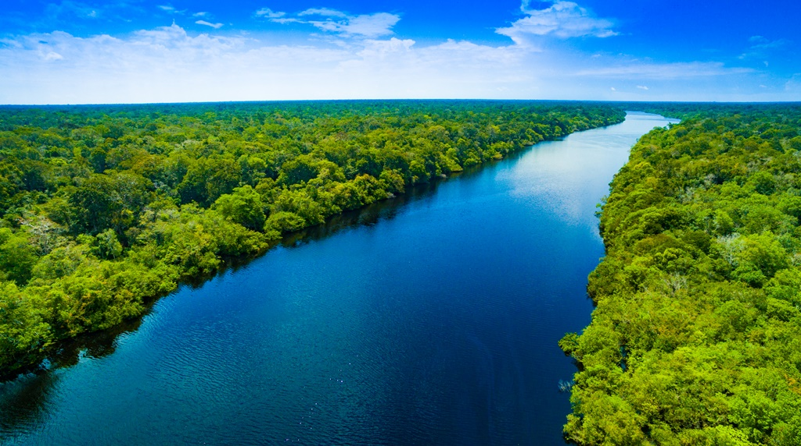

Where do Dolphins live? |
|||
| Where Dolphins live/ What type of animals they are: | Different types of Dolphins: | What they eat/Potential threats for them: | Fun facts about dolphins: |
|
As there are many different types of dolphins, their habitat varies to all around the world. However, one thing all Dolphins have in common is the fact that they all tend to stay in the shallow parts of the oceans, although some do like deep waters. They are also found in both hot and cold temperatures, with different species preferring different temperatures. They can also be found in rivers. For example, pink dolphins usually stay in the Amazon and Orinoco River, both located in South America. In terms of oceans, Dolphins can be found in most seas around the world. These include the Pacific, Meditteranean and Atlantic Ocean, alongside both the Black and Red Seas. Visit the link at the top of the page to find out an interesting story about how Dolphins can identify their friends! |
 | ||